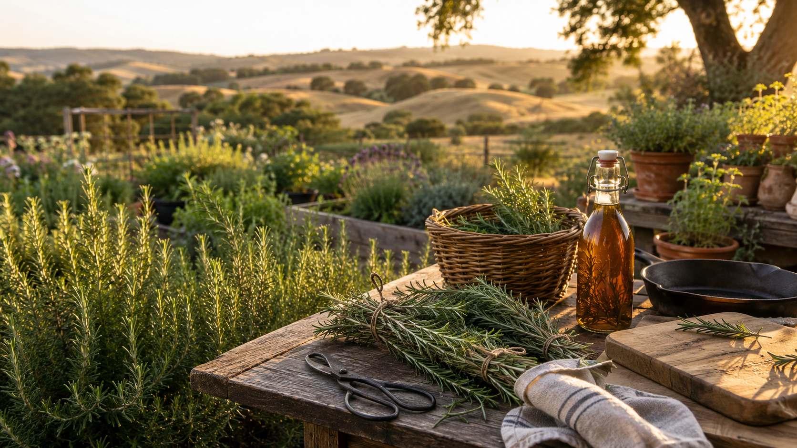
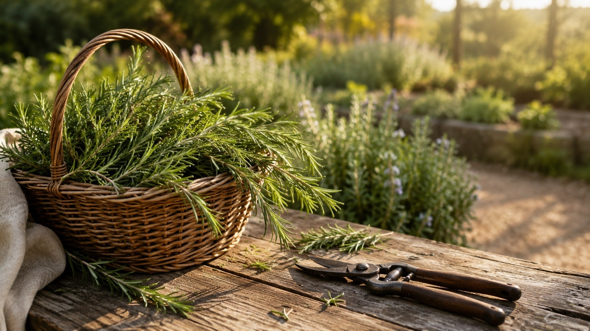
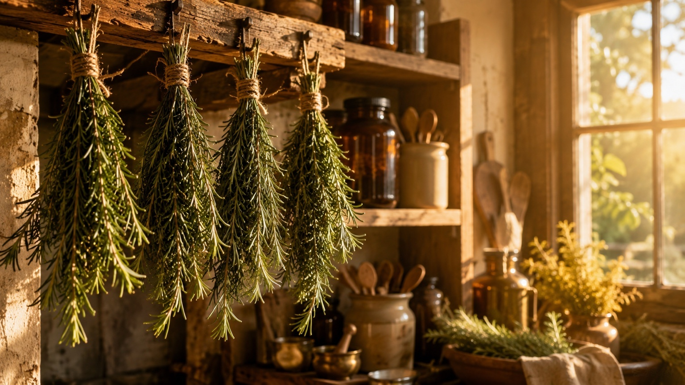
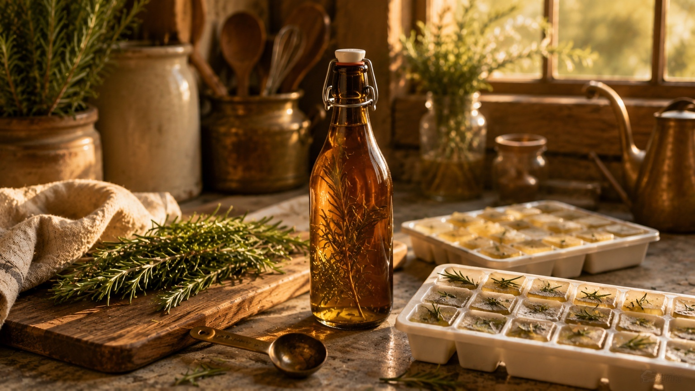
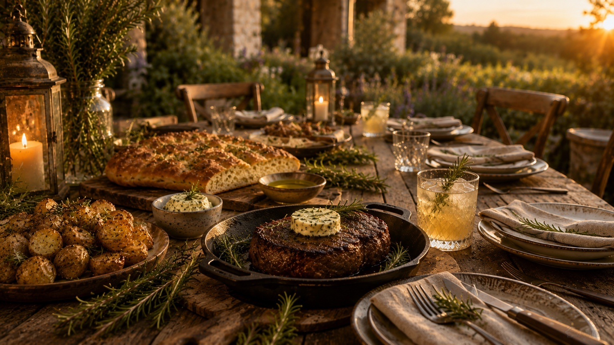

Rosemary Harvest & Preserve
Harvest & Preserve Rosemary
Rosemary is one of the few herbs we can harvest nearly year-round. Some goes straight to the table. The rest becomes dried bundles, frozen syrup, and simple ways to keep the garden close even after the season changes.
Explore Rosemary
From garden harvest to the meals and drinks we gather around.
This page is one part of the Rosemary story. Start with the guide, save the harvest, make the syrup, mix the drink, or follow the trail toward the recipes coming next. Rosemary belongs in more than one place — the garden bed, the pantry, the glass, and the table.
Grow rosemary well, choose the right varieties, harvest with confidence, and understand why this herb stays at the center of our garden-to-glass table.
Read the guide →Dry rosemary in bundles, freeze syrup cubes, store it well, and bring the harvest back to the table throughout the year.
Save the harvest →Turn fresh rosemary into a simple syrup for bourbon sours, lemonade, sparkling mocktails, tea, and seasonal drinks.
Make the syrup →A cozy garden-to-glass cocktail where rosemary, citrus, and bourbon feel made for one another.
Mix the drink →Knowing when to cut
Harvest rosemary when the stems are young, fragrant, and still full of life.
Rosemary is forgiving, but it still rewards gentle harvesting. The best stems are the flexible green tips — not the older woody growth near the base. Cut in the morning after the dew has dried, take what you need, and leave plenty of foliage behind so the plant can keep feeding itself.
In our garden, rosemary is less of a one-time harvest and more of a steady relationship. A few sprigs for potatoes. A few more for chicken. A bundle for drying. A handful for syrup. It is the kind of plant that quietly keeps the kitchen and bar supplied all year.
Fresh rosemary carries the brightest fragrance and belongs in meals, garnishes, syrups, and drinks you are making right away.
Start fresh →Small bundles dry beautifully and keep rosemary ready for soups, roasted vegetables, breads, and winter meals.
Dry bundles →Rosemary syrup cubes keep the bar stocked when fresh stems are not close at hand.
Freeze syrup →Use what you kept in the meals, drinks, and ordinary evenings that need a little rosemary.
Use it well →
Fresh from the garden
Use the first handful while the scent is still on your fingers.
Fresh rosemary has a brightness dried rosemary cannot fully replace. It belongs with roasted potatoes, grilled vegetables, Sunday chicken, focaccia, soups, marinades, and anything that needs a little depth without feeling complicated.
It also earns its place at the bar. A fresh sprig can perfume a glass, become a garnish, stir into warm syrup, or smoke gently over a cocktail. This is rosemary at its most immediate — cut, carried inside, and used before the garden has left it.
Drying rosemary
The simplest preservation method is still one of the best.
Rosemary dries better than many herbs because the leaves are sturdy and aromatic. Keep the bundles small so air can move through them, hang them upside down away from direct sun, and give them time. The leaves are ready when they feel brittle and strip cleanly from the stem.

Bundle Small
Gather 5 to 8 stems at a time. Oversized bundles trap moisture and can dry unevenly.
Hang in Airflow
Choose a warm, dry, ventilated place out of direct sunlight. A pantry, laundry room, or shaded kitchen corner can work well.
Wait 1–2 Weeks
Drying time depends on humidity. Do not jar rosemary until the leaves are fully dry and crisp.
Freezing & syrup
Freeze rosemary in the form you will actually use.
Freezing whole sprigs works, but rosemary syrup is usually more useful for From Bed to Bar. It is already measured, already sweetened, and ready for sparkling water, lemonade, tea, bourbon, gin, or a winter mocktail.
Make the syrup, cool it completely, pour it into ice cube trays, and freeze. Once solid, move the cubes into a labeled freezer bag or container.

Quick storage guide
Keep rosemary in the form you will reach for later.
Once rosemary is dried or frozen, the rules are simple: label it, keep it sealed, and protect it from light, heat, and moisture. This quick guide keeps the practical details close without repeating the whole process.
| Method | Keeps For | Best Use |
|---|---|---|
| Fresh stems | 1–2 weeks in the refrigerator | Roasts, potatoes, focaccia, garnishes, and quick syrups. |
| Dried rosemary | About 1 year in a sealed jar | Soups, roasted vegetables, breads, marinades, and winter meals. |
| Frozen rosemary | About 6 months | Cooked dishes where texture matters less than flavor. |
| Rosemary syrup | 2–3 weeks in the refrigerator | Lemonade, tea, sparkling water, bourbon, gin, and mocktails. |
| Frozen syrup cubes | About 6 months | A ready-to-use garden note for drinks when fresh rosemary is not nearby. |

Raised around the table
Rosemary has a way of gathering people.
Dried bundles and frozen syrup cubes are useful, but they are only part of the story. Rosemary has a way of showing up when dinner needs care — in warm bread, crisp potatoes, roast chicken, cast-iron steak, and the drinks we pour while people linger in the kitchen.
Some harvests are remembered because of what we preserved. Others are remembered because of who was around the table. Over the years, we have discovered that rosemary seems to find its way into both.
We do not preserve rosemary because we are afraid to lose it. We preserve it because we know people are coming.
Favorite traditions around our table
The dishes and drinks we keep coming back to.
This is where rosemary moves from preserved ingredient to shared meal. A few stems can season a roast, crisp a pan of potatoes, perfume a loaf of focaccia, melt into compound butter, or turn a simple drink into something worth lingering over with the people we love.
Sunday Rosemary Roast Chicken
Whole chicken with rosemary, garlic, lemon, and garden vegetables. This is the kind of meal that fills the house with a smell that makes everyone wander into the kitchen before dinner is ready.
Crispy Rosemary Potatoes
Golden roasted potatoes tossed with fresh rosemary and olive oil. They work beside grilled meat, holiday dinners, or a quiet Sunday meal with leftovers and good conversation.
Rosemary Focaccia Bread
Homemade focaccia, olive oil, flaky salt, and rosemary clipped fresh from the garden. It is simple food, but it has a way of making people stay near the counter a little longer.
Rosemary Compound Butter
Soft butter folded with finely chopped rosemary, garlic, salt, and a little lemon. Melt it over filet mignon in a cast-iron skillet, spread it over warm bread, or tuck it under roast chicken skin before it goes into the oven.
Rosemary Bourbon Sour
Rosemary syrup gives a familiar bourbon sour a garden note that feels steady, warm, and just a little unexpected — exactly the kind of drink to pour while dinner comes together.
Continue the story
Keep Rosemary Close
Once the harvest is dried, frozen, or turned into syrup, rosemary naturally finds its way back into the kitchen, the glass, and the meals that gather people around the table.
Rosemary harvest questions
FAQ
In mild climates, yes. Rosemary is evergreen and can be harvested lightly throughout the year. The best harvests come during active growth, but small winter cuttings are fine from a healthy plant.
Tie small bundles and hang them upside down in a warm, dry, ventilated place away from direct sunlight. Rosemary usually dries in one to two weeks depending on humidity.
Yes. Freeze whole sprigs, chopped leaves, compound butter, or rosemary simple syrup. For drinks, frozen syrup cubes are usually the most useful option.
Dried rosemary is best within six months, though it may last longer if stored away from light, heat, and moisture. If it still smells fragrant when crushed, it is still useful.
Rosemary flowers are edible and make a pretty garnish, but the strongest flavor for drying, cooking, syrup, cocktails, and mocktails comes from the stems and leaves.
Yes, but not in the same way as tender green growth. Woody stems can be used as skewers, smoking sprigs, or aromatics for roasting. For drying and fresh flavor, use younger green stems.
Drink responsibly. Every mocktail on this site is just as good as the cocktail version. Enjoy the garden. Enjoy the bar. Be safe, be kind, and look after each other.